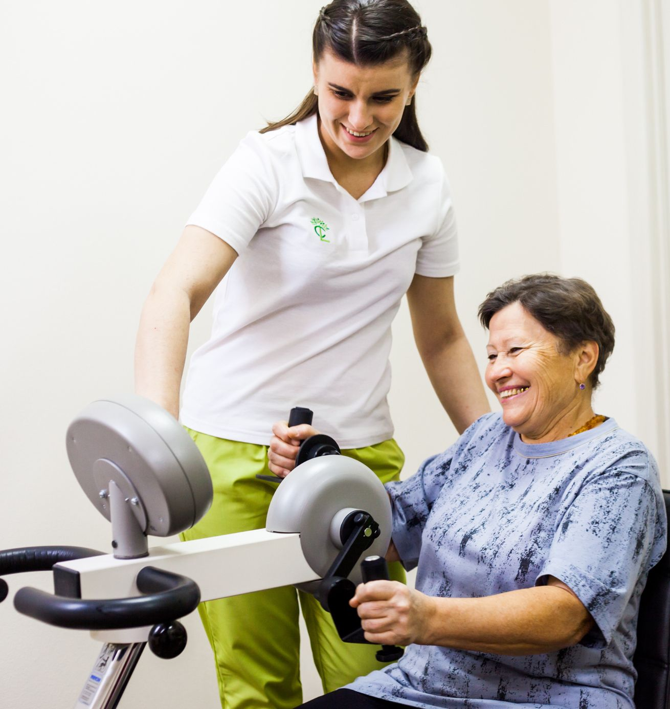
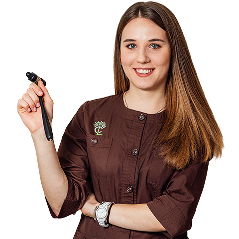
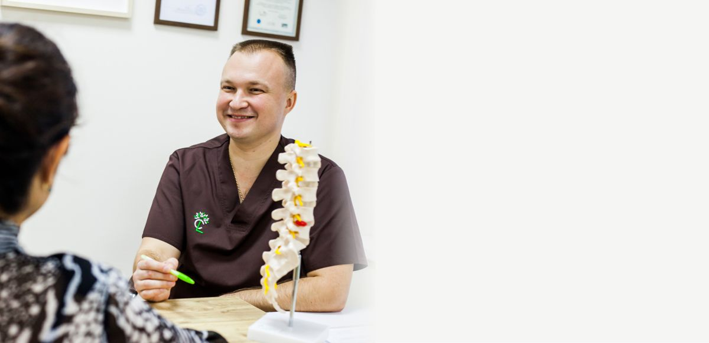
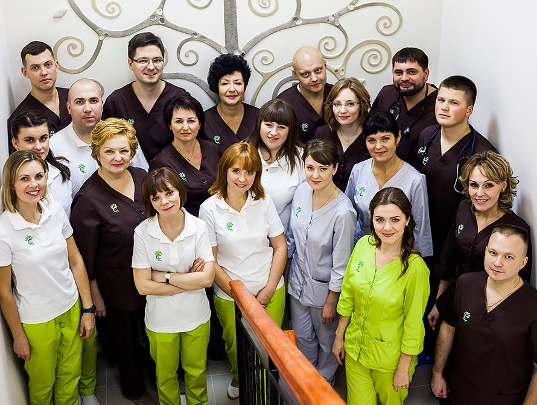
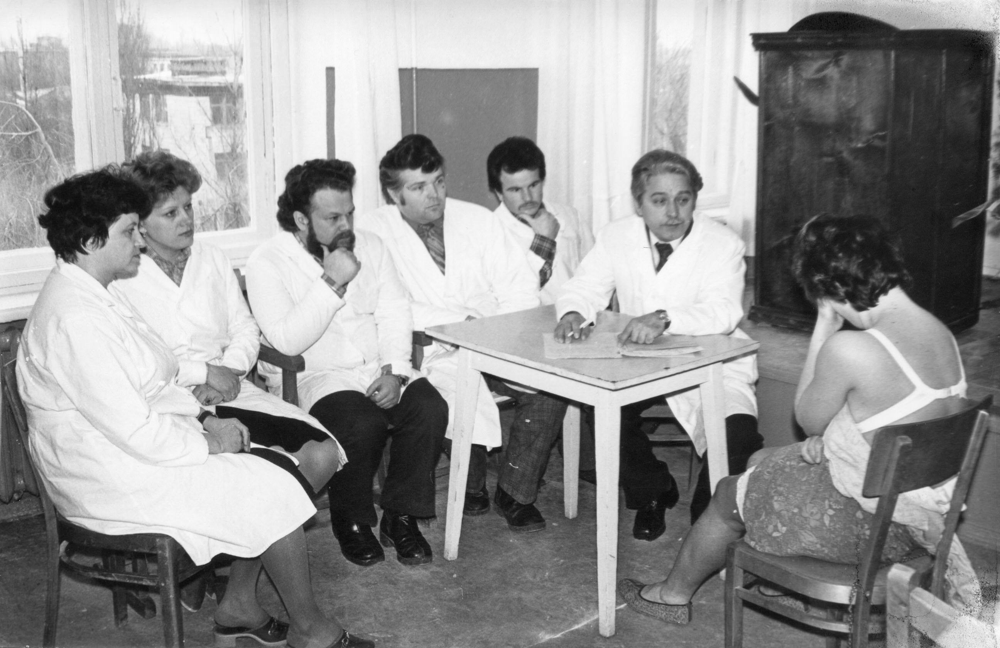

Неврологія та реабілітація після інсульту в Полтаві
Програми з цілодобовим перебуванням і амбулаторно. Професорська школа неврології, лікарська династія з 1955 року.
Реабілітація після інсульту: з перебуванням у клініці або амбулаторно
Програма з цілодобовим перебуванням триває від 14 днів: щоденна комплексна реабілітація, 4-разове харчування, цілодобове спостереження. Телефонуйте, підберемо формат.
Обговорити програму (053) 267-01-01
З цілодобовим перебуванням
Від 14 днів. Ціни в гривнях за курс.
| Рівень | 14 днів | 28 днів | Доба продовження |
|---|---|---|---|
| Стандарт | 37 300 грн | 57 330 грн | 2 660 грн |
| Комфорт | 38 700 грн | 59 850 грн | 2 760 грн |
| Преміумодномісна палата | 48 500 грн | 77 490 грн | 3 460 грн |
Ціни за 28 днів — зі знижкою 10 %. Доба продовження — ціна 1 доби як продовження курсу.
Амбулаторно
Заняття в клініці без перебування.
| Програма | Обсяг | Вартість |
|---|---|---|
| Прескринінг | 800 грн | |
| Початкова | 30 годин, 10 днів | 16 500 грн |
| Розширеназі знижкою 10 % | 60 годин, 20 днів | 28 350 грн |
| Повназі знижкою 20 % | 100 годин, 33 дні | 41 200 грн |
Чотири етапи реабілітації
-
Етап I. Скринінг
Консультація невролога і лікаря фізичної та реабілітаційної медицини за шкалами, аналізи, функціональна діагностика: ЕКГ, холтер, МРТ, доплер.
-
Етап II. Призначення курсу
Цілі та інтенсивність занять; переоцінка за шкалами раз на тиждень.
-
Етап III. Реабілітація
Фізична терапія і ходьба, вертикалізація й рівновага, кінезіо- і механотерапія, ерго- і дзеркальна терапія, логопед, нейропсихолог.
-
Етап IV. Адаптація
Виїзд додому для адаптації, підбір допоміжних засобів, навчання родини догляду.
Рекомендована інтенсивність — 4–6 тижнів, не менше 3 годин на день.
Команда
- лікар фізичної та реабілітаційної медицини
- фізичний терапевт
- ерготерапевт
- психолог
- логопед
Також: перевезення пацієнтів у межах міста, допомога з оформленням виплат.
Методи
- вертикалізація та тренування рівноваги
- фізична терапія
- кінезіотерапія
- механотерапія та кардіотренування
- ерготерапія
- CI-therapy
- стабілотренінг

Неврологія, медицина болю, кардіологія
Не знаєте, до кого йти? Почніть з консультації невролога: лікар підбере метод. Ціни консультацій
Загальна неврологія
Методи
- стандартне медикаментозне лікування
- фармакопунктура
- лікувальні блокади
- ботулінотерапія
- електростимуляція
- тренування на стабілоплатформі
- медичний масаж

Медицина болю
Методи
- епідуральна блокада
- нейроабляція
- нейромодуляція
- введення внутрішньосуглобових рідин
Кардіологічний супровід пацієнтів на реабілітації
Кардіологія
Методи
- ЕКГ
- УЗД серця (ЕхоКГ)
- доплерографія серця, судин шиї та нижніх кінцівок
- холтерівський моніторинг ЕКГ
- лабораторна діагностика
Лікарі центру
Наталія Литвиненко — провідний невролог центру
- доктор медичних наук
- професор кафедри нервових хвороб з нейрохірургією та медичною генетикою
- член УАБІ, WSO, WFNR
- автор 236 наукових праць
- лікарський досвід — понад 38 років

Команда
Загальна неврологія
- Наталія Литвиненко професор, д.мед.н.
- Вікторія Гладка доцент, к.мед.н.
- Катерина Таряник доцент, к.мед.н.
- Тетяна Пурденко доцент, к.мед.н.
- Олександра Піддубна невролог
- Ярослава Гавловська невролог, завідувач стаціонарного відділення
- Галина Мелашенко невролог
- Михайло Тончев нейрохірург, к.мед.н.
- Наталія Шуплік медична сестра
Реабілітація
- Володимир Федченко фізичний реабілітолог
- Валентина Андрущенко фізичний реабілітолог
- Юлія Федорченко логопед
- Олексій Гречка лікар функціональної діагностики
Суміжні спеціалісти
- Наталія Савченко кардіолог
- Ігор Іваницький лікар УЗД, к.мед.н.
Лікарська династія Литвиненко з 1955 року

Ціни на консультації
Ціни програм реабілітації — у розділі про реабілітацію. Актуальність цін уточнюйте за телефоном.
Подзвонити (053) 267-01-01| Послуга | Ціна, грн |
|---|---|
| Первинна консультація невролога | 430 |
| Первинна консультація невролога к.мед.н. | 580 |
| Первинна консультація професора Литвиненко | 700 |
| Повторна консультація невролога | 330 |
| Нічний ЕЕГ-моніторинг | 1500 |
Як записатися і дістатися
Мобільні
- (095) 199-59-00 Vodafone
- (067) 199-59-00 Київстар
- (073) 199-59-00 lifecell
Графік
- Пн–пт
- 8.00–20.00
- Субота
- уточнюйте за телефоном
- Неділя
- вихідний